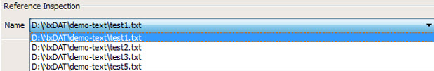
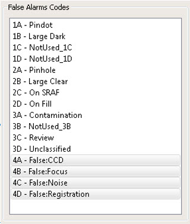
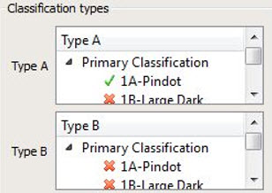

An inspection file must be loaded into Calibre DefectReview
The parameters shown in the dialog box have default values taken from the calibration file. You can modify the default values in the calibration file editor. Refer “Calibration Parameter Modification” details.
Override |
Description |
|---|---|
Reference Inspection |
By default, the first inspection is set as the reference inspection. To select a different reference inspection, choose from the combo box in the Reference Inspection pane. Figure 2. Modifying
Reference Inspections
 |
Search Radius |
The search radius parameter is used for the following analysis types:
The search radius parameter is used to determine whether a defect of the reference inspection is located in other inspections within the specified radius. To modify the search radius, type or select the value in the Value (Microns) field in Search Radius pane. The value is in units configured in the dat-ini.xml file. For more details on configuring units, refer to “Unit of Measurement Configuration”. |
False Alarm Codes |
The False Alarm codes are required for defect count analysis result of Real Vs False Alarms. The False Alarm codes are listed in the False Alarm Codes pane. To specify multiple False Alarm codes:
Figure 3. False Alarm Codes
 |
Classification Types |
Classification types are used to plot the results of a defect count based on classification types. To modify the classification types, select from the Type A and Type B combo boxes. Figure 4. Classification Types
 |
Must Catch Defect File |
To plot the detection line graph, grid detection should be computed. You can either use the grid detected by the tool using auto grid detection or use the grid obtained by Must Catch Defects file. Refer to “Specifying a Must Catch Defects File” for information. |
Inspection Offsets |
Before computing the Repeatability Analysis results, you can compute the shift in all inspections with respect to the reference inspection. Click the Set Values button in the Inspection Offsets pane to invoke a dialog box. Refer to “Shifting Inspections” for information. |